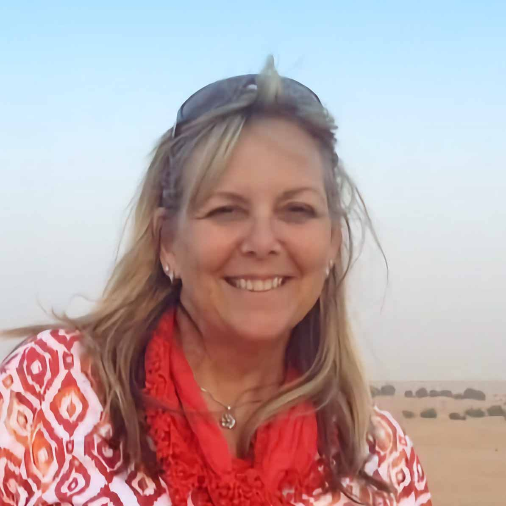
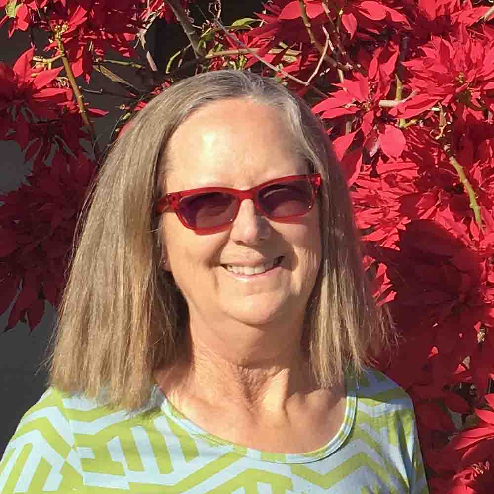

Meet the creators of Flourish Garden, a proud woman-owned and operated mobile application!
Zona Forsyth, Founder and CEO
Zona is a landscape architect with a master's degree in Landscape Architecture. She is a third-generation landscape professional and has over 30 years’ experience as a planting designer, project manager and nurseryman. During her professional career she has worked on numerous high profile custom residential projects in the United States, Europe, Asia, and the Seychelle Islands. Zona brings to the team her international design and business experience.
Find Zona on Social Media: Instagram | TikTok
Lesa Jones, Co-Founder & Content Manager
Lesa is a retired plant broker with over 30 years experience in the landscape industry. Her plant brokerage business specialized in procuring quality plants for large projects in California, Arizona, Texas and Nevada, by collaborating with plant nurseries throughout the United States. Lesa brings to the team vast knowledge of plants and extensive business experience.

© PlanningMyGarden Inc. All rights reserved.